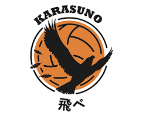

01 / 08 VER NA WIKI ↗MIYAGI • KARASUNO HIGH
Os Corvos ↗
VOE
FILOSOFIA
A filosofia do Karasuno é a evolução constante e a coragem para arriscar. Seus jogadores se recusam a estagnar e preferem aprender com os adversários durante as próprias partidas.
O TIME
飛べ — FLY
Conhecidos como os "corvos caídos", eles renascem com uma ofensiva imprevisível. O ataque rápido de Hinata e Kageyama, os saques potentes e os ataques sincronizados são suas marcas registradas.